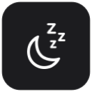
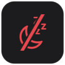

外付けディスプレイに繋いだまま蓋を閉じたい、ダウンロードや書き出しを回したまま席を立ちたい。
そんなときに、メニューバーのアイコンを押すだけで「蓋を閉じてもスリープしない」状態に切り替えられます。
今どちらの状態なのかは、アイコンを見れば一目で分かります。
アイコンの見方
メニューバーの右側に、月のマークが出ます。斜線が入っていたら「スリープしない状態」です。
| メニューバーの表示 | 状態 |
|---|
 |
ふつう
蓋を閉じるとスリープします
|
|
スリープしない状態
蓋を閉じても起きたままです
|
 |
スリープしない状態（電源に繋がっていません）
このまま蓋を閉じると電池が減り続けます
|
アイコンをクリックすると切り替わります。右クリックすると、状態の確認や「ログイン時に起動」の設定ができます。
インストールのしかた
このアプリはAppleの開発者署名を付けていないため、最初の1回だけmacOSの警告を通す操作が必要です。2回目からは普通に開きます。
- 上のダウンロードボタンを押して、ダウンロードされたファイルをダブルクリックで展開する
- 出てきた SleepGuard を、「アプリケーション」フォルダにドラッグして入れる
- 「アプリケーション」フォルダの SleepGuard をダブルクリックする。
→「Appleが悪質なソフトウェアでないことを確認できません」と出るので、「完了」を押す（まだ開きません）
- 画面左上のアップルマーク → 「システム設定」 → 左の一覧から 「プライバシーとセキュリティ」 を選び、
一番下までスクロールする。
→「"SleepGuard" はブロックされました」と書かれた行の 「このまま開く」 を押す（パスワードを聞かれたら、ご自身のMacのパスワードを入れてください）。
※ この操作には管理者アカウントが必要です。会社から貸与されたMacなどで押せない場合は、管理者の方に頼んでください
- もう一度 SleepGuard をダブルクリックして、出てきた確認に 「開く」 と答える
- 「パスワード入力を不要にします」と聞かれるので、「続ける」を押してパスワードを入れる。
→ これで準備完了です。メニューバーに月のアイコンが出ます
※ 最後のパスワードは、このアプリがスリープの設定を変えることだけを許可するためのものです。省略しても使えますが、その場合は切り替えるたびに毎回パスワードを聞かれます。あとから取り消すこともできます（下記）。
使う前に知っておいてほしいこと
電源に繋いでいなくても、寝なくなります。
バッテリーのまま蓋を閉じると電池が減り続け、カバンの中でMacが熱くなります。
その状態のときはアイコンが赤になるので、赤いときは蓋を閉じる前に戻してください。
この設定は、Macを再起動しても残ります。
アプリを終了しても解除されません。戻すときは、アイコンをもう一度クリックして斜線のない状態にしてください。
やめたくなったら
- メニューバーのアイコンを押して、斜線のない状態に戻す
- アイコンを右クリック →「パスワード不要の設定を取り消す…」を選ぶ（設定していた場合）
- アイコンを右クリック →「終了」
- 「アプリケーション」フォルダの SleepGuard をゴミ箱に入れる